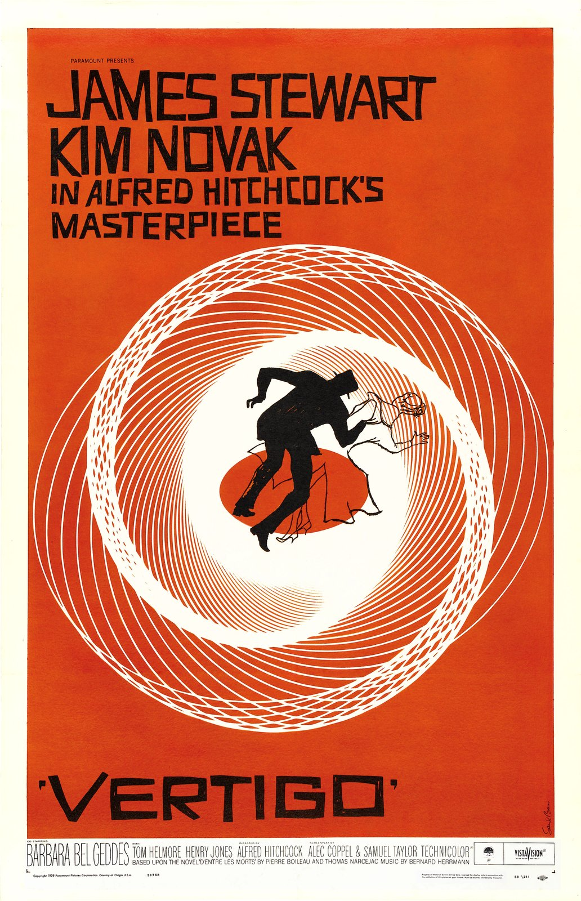

Saul Bass was an American graphic designer from New York. He was born in 8th May 1920 and died 25th April 1996. While he was working during the mid-20th century, graphic design was just on the upswing. Throughout this era, he would have been considered one of the single most accomplished and celebrated designers in the world. He had also helped shape post-war visual culture.
Background
From a young age, Bass was known to be creative as he drew constantly. As a schoolboy, he had a passionate interest for the visual world. With his ability to adapt and transform, visual elements that caught his eye, to fulfil his creative needs, he showed clear traits of a true designer. He had also spent a lot of time in the Metropolitan Museum of Art, looking at special exhibitions. The works he favoured most out of the Museum were the artefacts from Egypt and other ancient civilisations. To prepare for his career in graphic design, he then went on to study at the Manhattan’s Art Students’ League taking night classes as a teenager in New York, where he became a scholarship student. He then worked as a freelance designer after leaving the Manhattan’s Art Students’ League. In 1938, Bass went on to work for Warner Brothers as a ‘lettering and paste-up man’ for $20 a week. He then left his job at Warner Brothers to work for Twentieth Century Fox. Soon after he was fortunate enough to be taught by Gyorgy Kepes in Brooklyn College (from 1944 to 1945), who became a big shaping influence for Bass. Kepes was a Hungarian designer, photographer, painter, theorist, and Bauhaus devotee. Kepes had focused Bass’ ideas on the topics of modernism, psychology, and the social responsibility of designers. Kepes had proved to be the mentor Bass was looking for. Bass had later said, “He really just set me on fire”, emphasising how much inspiration Kepes gave to Bass. (Saul Bass: A Life In Film And Design – Designcurial., 2020.)
Progression
In 1946, Bass had the great opportunity of moving to Los Angeles after the Second World War to work with a major advertising company whose accounts included Trans World Airlines and Paramount. This paved the way for his career as it rapidly took off in a city that was newly emerging as a vital centre of modernism in architecture and design, filled with rich clients and sponsors. This gave him plenty of new opportunities and established a more permanent business venture.
He was able to found his graphic design firm called Saul Bass and Associates during the 1950s.
Corporate Identities
“If I do my job well, the identity program will also clean up the image of the company, position it as being contemporary and keep it from ever looking dated.”
– Saul Bass (Saul Bass Logo Design: Then And Now – Annyas, C. 2020.)
Bass had created some of the greatest and most recognised logos in history for well known clients/companies. Being able to design a good logo for a client is important for brand identity because it is a visual symbol that shows what the company is about. Simplicity within a logo is also important because it makes it more memorable, but it should also be able to differentiate from other logos to make it stand out from the rest. Bass was able to design plenty of good logos, as some of the logos he created was Lawry’s Foods (1959), Alcoa (1963), Fuller Paints (1963), Celanese (1966), Continental (1967), Rockwell International (1968), Bell (1969), Dixie (1969), Quaker Oats (1969), United Way (1972), United (1973), Warner Communications (1974), Avery (1975), Frontier Airlines (1978), Girl Scouts (1978), Hanna-Barbera (1979), Boys Clubs (1980), Kleenex (1980s), Minolta (1981), Geffen Records (1981), General Foods (1984), Kibun (1984), AT&T (1984), Y.W.C.A. (1988), Kose Cosmetics (1991), The Getty Center (1993). (Saul Bass Logo Design: Then And Now – Annyas, C. 2020.)
The average lifespan of his logos is 34 years. This statistic shows how well designed his logos are. I think the lifespan of his logos are so long because he was able to capture the vision of the company’s credibility traits and present it in a visual way in the form of a logo. From the research I have done, I have learned the in order to create a logo that works is to look at a logo as communication persuasion instead of looking at it as a piece of artwork. Four elements that are important would be to know the company and what they do, what kind of message they are trying to send, the medium that carries the logo and who is going to see it (the target audience). (The Saul Bass-Approved Method Of Credibility-Based Logo Design - Haig, B., 2020.)
Transition from Print to Movies

Otto Preminger noticed Bass’ artistic talent and had invited him to design the poster for his 1954 movie, Carmen Jones. (Chapter 38 - Saul Bass, And The Art Of Film Title Sequence & Film Poster - Novin, G., 2020.) This moment was his first major break. During that time, film posters were mostly made of photographic scenes from the movie and some collaged colour portraits of the cast, however, Bass created a dramatic composition of a black and white Dorothy Dandridge posing in the centre wearing a red accented skirt along with a rose in flames. Preminger was so impressed with his poster work that they decided to offer him to design the title sequences for the film as well. This led to his shift from print to screen. Preminger then gave him his next job of the poster and title sequence for the film, The Man with the Golden Arm in 1955. (How Saul Bass Transformed Opening Movie Credits Forever. - Farr, J., 2020.) The film was about drug addiction and Bass had demonstrated this with popping colours along with the arrangement of irregular black rectangular edges with a black silhouette of a crooked arm. This could symbolise a drug addict’s arm or a broken arm which could represent a broken man due to the use of drugs. (Saul Bass: The Man Who Changed Graphic Design - Bigman, A., 2020.)
Because Bass’ work on The Man with the Golden Arm was such a success, it had established his reputation as a great designer in the film industry. Mike Todd had noticed his work and in 1956, he had asked Bass to design the title sequence for the film, Around the World in 80 Days. Bass had produced a mini animation for the title sequence, which was placed at the end of the movie. This is so when the movie was over and everyone began to leave, the animation would come on and almost everyone would sit back down to watch it.

Preminger had created an adaptation of the novel “Bonjour Tristesse” by Francoise Sagan. In 1958 Bass had created a striking poster for the film which had been placed among the top 10 films of the year in Cahiers du Cinema’s year-end critics’ poll. Martin Scorsese had described the poster as “an emblematic image, instantly recognisable and immediately tied to the film”. Still in the same year, Alfred Hitchcock had seen Bass’ poster and title sequence work. He had immediately distinguished his incredible talent for visual communication design. Bass had then created the title sequence for Hitchcock’s film, Vertigo. This was his first piece of work for Hitchcock. His second piece for Hitchcock was for North by Northwest In 1959. Bass had simplified the image of a skyscraper into a grid of vertical and diagonal lines which the credits would roll over to create a classic suspenseful Hitchcock film.
In 1959, Bass worked on the poster for Preminger’s Anatomy of Murder. The poster he created was made up of two irregular rectangles, one in orange and the other in red. The orange rectangle was at the top showing the title of the movie and the name of the director. The red rectangle contained the names of the actors.
Bass had created over 50 title sequences by the end of his lifetime. He had created these for Otto Preminger, Alfred Hitchcock, Martin Scorsese, John Frankenheimer and Stanley Kubrick. (The Man Who Made The Title Sequence Into A Film Star - Rawsthorn, A., 2020.) Through the use of graphic design and animation, Bass had created a trend within the film industry when it came to the design of title sequences. Bass had won an Oscar for his short film, Why Man Creates, in 1968. He was also honoured with an exhibit at the Visual Arts Museum in New York during the early ‘90s.
Conclusion
Overall, it is clear to tell from his work that Saul Bass was one of the most talented designers throughout history. He had completely changed the face of film title sequences. Before Bass’ work in the film industry, most posters were not that eye-catching and were mainly collages of scenes from the movie or the actors themselves and title sequences would have been fancy lettering on a plain or decorative background. (Let It Roll!. - The Independent. 2020.) Bass was able to tell the audience something about the film through title sequences. His work was able demonstrate emotion or express an idea in a visual form. This was why he was hired by many well-known directors, because they saw his work and saw the talent, he was able to produce.
Bass had believed that the audience’s interest should be captured from the very first frame, which is why he created title sequences as they were responsible for setting the mental and emotional tone of the film. He knew how to use simplicity to his advantage through the use of basic colours, shapes and animations, however, creating a deeper meaning to the simplicity by understanding the film’s meaning and ambitions, almost like giving the audience clues as to what to look out for throughout the movie. That was how he changed the face of film title sequences.